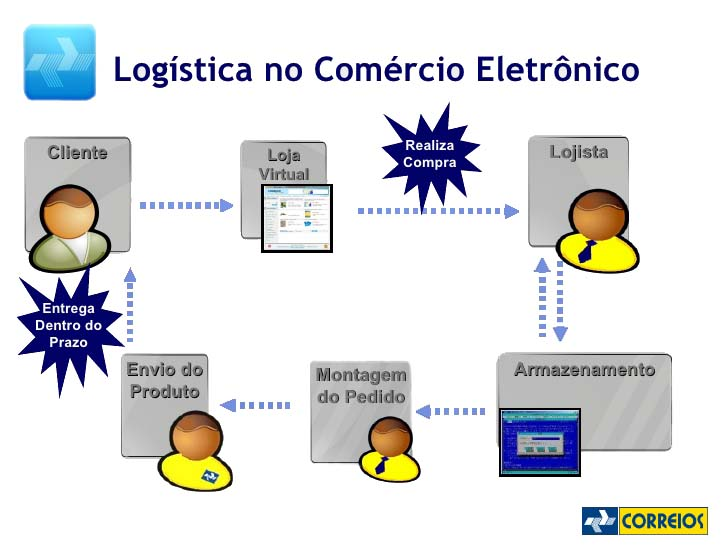
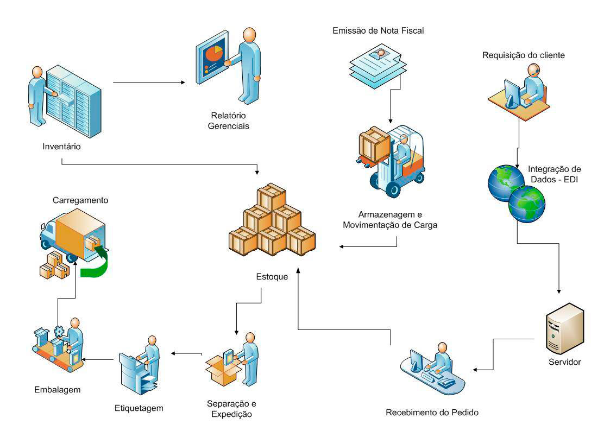

IDEAL PARA E-COMMERCE cadastre-se agora produção limitada !
Acredite, você achou o parceiro ideal para facilitar a sua vida e poder dedicar-se ao seu e-commerce !!!
NÃO IMPORTA EM QUE REGIÃO DO BRASIL VOCÊ ESTEJA E A QUANTIDADE DE VENDAS, IREMOS ATENDÊ-LO !!!
Se você quer iniciar ou já tem um e-commerce entre contato conosco pois podemos fazer toda sua PRODUÇÃO E LOGÍSTICA AGORA.
FAÇA CONFORME VÁRIAS EMPRESAS DE E-COMMERCE : TRABALHE CONOSCO COM SIGILO ABSOLUTO !
IMPORTANTE : QUEREMOS OUVÍ-LO PARA DESENVOLVERMOS O MELHOR PRODUTO PARA O MERCADO BRASILEIRO !

Ideal para INICIANTES e quem está focado em CRIAR e VENDER
COMPRE DO NOSSO ESTOQUE AS CAMISETAS e conforme a sua venda for acontecendo imprimimos por demanda através do
processo digital a sua estampa e seu tag interno com seu logo e cnpj no avesso das costas (serviço cobrado separadamente) e
POSTAMOS PARA SEU CLIENTE SENDO VOCÊ O REMETENTE através do Correios.
A embalagem é simples na cor branca sem propaganda da nossa empresa.
Você pode também enviar a sua embalagem personalizada, folders promocionais que seguiremos os procedimentos de postagem
(serviço cobrado à parte).
VANTAGENS:
Sigilo absoluto. Use a nossa tecnologia digital e não imobilize seu dinheiro em equipamentos, estoque, espaço físico, controle de
qualidade e logística, tenha mais tempo para vender, criar e aproveitar a vida !!!

Para quem FABRICA SUA CAMISA e quer somente CRIAR E VENDER
VOCÊ ENVIA A SUA CAMISA e conforme a sua venda for acontecendo imprimimos sob demanda através do processo
digital sua estampa e POSTAMOS PARA SEU CLIENTE SENDO VOCÊ O REMETENTE ATRAVÉS DO CORREIOS.
Você pode enviar a sua embalagem personalizada, folders promocionais que seguiremos suas instruções de envio.
(serviço cobrado à parte).
VANTAGENS:
Sigilo absoluto. Use nossa tecnologia digital e não imobilize seu dinheiro em equipamentos, estoque, espaço físico, controle de
qualidade e logística, tenha mais tempo para vender, criar e aproveitar a vida !!!
Para evitar atrasos sugiro enviar primeiro todas as artes para análise e setup de impressão.
Você pode fazer uma bandeira (placa) de cada estampa para fazer um mostruário caso vc faça alguma
venda externa na sua região ou queira montar um show room. O cliente vendo a qualidade da sua estampa
ajuda na decisão da compra. Cobraremos o valor do silk e a metade do preço da camisa lisa.
Tempo 1
Aprovação da arte enviada, confirmação do pedido e pagamento: em até 3 dias úteis.
Tempo 2
Início da produção (após a confirmação do pagamento) e postagem: em até 5 dias úteis podendo ser alterado
caso ocorra algum defeito de algum equipamento ou imprevisto de força maior.
Você será informado imediatamente caso ocorra algum defeito ou manutenção no equipamento para alterar o seu
tempo de entrega.
O CUSTO DO FRETE E TEMPO DE TRÂNSITO DA MERCADORIA ATÉ O SEU CLIENTE É DE SUA RESPONSABILIDADE.
PORTANTO CALCULE O PRAZO DE ENTREGA PARA SEU CLIENTE CONSIDERANDO OS 3 DIAS ÚTEIS DO TEMPO 1 + OS 5 DIAS
ÚTEIS DO TEMPO 2 + O DOBRO DE DIAS QUE O CORREIOS FORNECERÁ PARA A ENTREGA (CONSIDERE O TEMPO DE ENTREGA
A POSTAGEM SENDO FEITA DO CEP DA CIDADE DE SÃO GONÇALO – RJ ATÉ O CEP DO SEU CLIENTE).
CASO O CORREIOS DEVOLVA A MERCADORIA POR QUALQUER MOTIVO ELA IRÁ PARA VOCÊ QUE É O REMETENTE.
LEMBRE-SE É VOCÊ QUE ESTÁ EFETUANDO A VENDA PARA O SEU CLIENTE ATRAVÉS DE SEU COMÉRCIO ELETRÔNICO E EM
MOMENTO ALGUM IREMOS INTERVIR JUNTO AO SEU CLIENTE EM RELAÇÃO À DEVOLUÇÃO OU DESISTÊNCIA DA COMPRA OU
DEFEITOS DE PRODUÇÃO E NEM OFERECER PRODUTOS OU SERVIÇOS.
APESAR DE MANTERMOS O NOSSO CONTROLE DE QUALIDADE QUALQUER DEFEITO DE PRODUÇÃO VOCÊ RESOLVERÁ DIRETAMENTE
COM A NOSSA EMPRESA E SEREMOS ÁGEIS EM RESOLVER.
NÃO NOS RESPONSABILIZAMOS POR MAU USO E LAVAGEM INDEVIDA DA CAMISA PELO SEU CLIENTE POIS A NOSSA MALHA
SEGUE UM PADRÃO DE QUALIDADE E DE ENCOLHIMENTO ENTRE 4% A 6% PARA MALHA 100% ALGODÃO.
AS MEDIDAS DAS CAMISAS PODEM VARIAR EM APROXIMADAMENTE 2CM.
PORTANTO ENVIE PARA SEU CLIENTE A FICHA TÉCNICA COM AS MEDIDAS, TODOS OS PROCEDIMENTOS DE LAVAGEM, ENCOLHIMENTO E OS
ANTES DE COMEÇAR A TRABALHAR CONOSCO E SENTIR-SE SEGURO QUE ESCOLHEU O PARCEIRO CERTO SUGERIMOS VOCÊ PRIMEIRO
COMPRAR DUAS CAMISAS DE CADA COR DA MESMA GRADE PARA FAZER SEUS TESTES DE LAVAGEM.
LAVE UMA E GUARDE A OUTRA PARA COMPARAR O ENCOLHIMENTO (PADRÃO ENTRE 4% A 6% DE ENCOLHIMENTO PARA MALHA 100% ALGODÃO).
INSTRUÇÕES DE LAVAGEM :
- LAVAR À MÃO SEPARADAMENTE.
NÃO USE MÁQUINA DE LAVAR!!!
A MÁQUINA TORCE A MALHA E SE ESTIVER COM OUTRAS PEÇAS IRÁ DESGASTAR A MALHA CRIANDO UM EFEITO ESTONADO.
- USAR ÁGUA CORRENTE DA TORNEIRA (ÁGUA QUENTE ENCOLHE A MALHA).
- USAR SABÃO NEUTRO SEM ALVEJANTE OU CLORO (CÂNDIDA).
USANDO O SABÃO ERRADO AS CORES E O BRANCO PODEM MANCHAR.
- SECAR À SOMBRA NO VARAL COM A CAMISA ALINHADA E DISTORCIDA.
NÃO SECAR EM SECADORA ROTATIVA OU SECADORA FIXA TIPO ENXUTA.
O CALOR VAI ENCOLHER A CAMISA.
SECAR A CAMISA TORTA NO
VARAL TAMBÉM IRÁ TORCER A MALHA.
- PASSAR A CAMISA DO LADO DO AVESSO, NÃO PASSAR A ESTAMPA, PASSAR O FERRO SEM VAPOR COM A TEMPERATURA NO MÁXIMO A 120 GRAUS
CELCIUS (CASO CONTRÁRIO PODERÁ QUEIMAR A MALHA E MANCHAR A ESTAMPA).